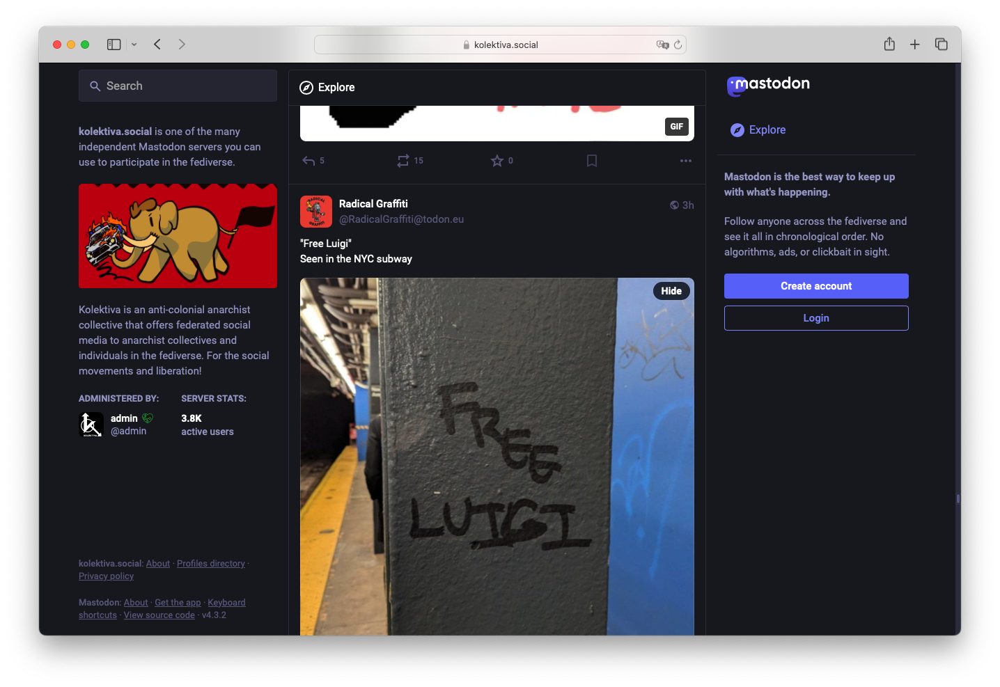

Ayuda & documentación
Por qué el fediverso mola
El fediverso es un conjunto de redes sociales que se comunican entre sí gracias a que todas usan un protocolo llamado ActivityPub, es decir, un lenguaje común que permite que desde cualquier rincón del fediverso puedas seguir e interactuar con personas que han elegido otros rincones del fediverso. Para entendernos, funciona como el email: si tú tienes una cuenta de correo en Gmail, puedes escribirte con una amiga que tenga su cuenta en el servidor de su universidad, o con el colectivo de tu barrio que usa un servidor autogestionado. El fediverso parte de la misma lógica: son redes sociales federadas, a las que te puedes unir desde donde quieras, y así te ahorras depender de oscuras empresas tecnológicas.
Mastodon es solo una de las redes sociales del fediverso. Lo elegimos porque es la más usada. A su vez, hay miles servidores de Mastodon. Hay gente que a los servidores los llama instancias, perdona por el lío, viene ser lo mismo. Cualquiera (con un poco de conocimiento técnico y recursos) puede montar su propio servidor, o incluso examinar el código y modificarlo a su gusto, porque es todo software libre. Cada servidor se rige según las normas que sus administradoras elijan. Los hay que funcionan de manera asamblearia y entre todas las usuarias deciden cómo se configura, qué contenidos se moderan, etc. Si, por lo que sea, alguien monta un servidor para hacer cosas maliciosas (como, por ejemplo, publicar spam o contenido tóxico), la respuesta es fácil: se bloquea para que no pueda comunicarse con tu servidor.
El fediverso está en construcción. No tiene toda la hipervelocidad, la dopamina, los flames y el brilli brilli que encuentras en las redes sociales comerciales. Ni hace falta, porque es otra cosa: un espacio para encontrarse, dialogar y relacionarse de manera más sana y gustosa. Aquí estamos tranquilas y seguras y tenemos la capacidad de construir juntas los futuros digitales que nos merecemos.
Cómo dar tus primeros pasos en Mastodon
Una vez creada una cuenta, es recomendable empezar por aquí:
- Ponerle foto y rellenar el perfil antes de seguir o interactuar con nadie.
- Mirar las opciones de configuración, donde puedes tomar algunas decisiones sobre apariencia, privacidad, etc. Una importante, si quieres que Mastodon te ayude llegar a más gente: en «Perfil» > «Privacidad y alcance», marca si quieres que tu perfil y tus publicaciones aparezcan en los resultados de búsqueda o en algoritmos de descubrimiento.
- Publicar un mensaje para presentar la cuenta (quién eres, intereses o lo que quieras). Puedes añadir dos hashtags: #presentación y #juntas. El primero es el que se suele usar siempre en el fediverso, el segundo es el de esta campaña. Nos hará ilusión saber que llegaste hasta ahí por esto y te saludaremos con alegría.
- Si tienes cualquier duda, pregúntanos: nuestra cuenta de Mastodon es vamonosjuntas@masto.es

¿Qué otras redes sociales hay en el fediverso?
Probablemente las más conocidas son PeerTube, para compartir vídeos, y Pixelfed. Los blogs de WordPress pueden ser parte del fediverso si se le añade el plugin necesario. En la web The Fediverse Party tienes un mapa más completo.
¿Cómo decido a qué servidor me apunto? ¿Qué consecuencias tiene?
Cada servidor tiene sus propias reglas: lo gestiona una persona o colectivo que es quien decide cómo se mantiene, cómo se financia y qué criterios de moderación se aplican. En todos los servidores hay un «Acerca de» que puedes leer para decidir cuál te conviene.
Cuando estés usando Mastodon, verás que, además de leer lo que publiquen las cuentas a las que sigues, tienes un feed de mensajes llamado «local» donde ves todo lo que se esté publicando en tu servidor. Si te apuntas a un servidor centrado en un tema que te interese, o que esté localizado en tu ciudad, por ejemplo, el feed local será valioso; si estás en un servidor generalista, probablemente tu feed local estará lleno de cosas diversas que no siempre te interesan y no lo mirarás nunca, te quedarás solo en las cuentas a las que sigues. Es decir: los servidores son una forma de crear comunidad, pero no es la única.
De cualquier manera, siempre podrás cambiar de servidor. Cuando te llevas tu cuenta a otro servidor, es fácil y rápido trasladar tus contactos (seguidas y seguidoras), pero no tu archivo de mensajes, que se quedarán publicados en el servidor antiguo si quieres.
¿Hay alguna netiqueta o norma de la comunidad que deba conocer?
Como en todas las comunidades, el fediverso tiene sus códigos y sus costumbres, pero no te agobies porque sobre todo la gente es bastante amable e irás aprendiendo poco a poco... Sin embargo, estas tres nos parecen especialmente interesantes:
- Se suele añadir texto alternativo (ALT) a las imágenes, que sirve para describirlas y hacer accesibles para personas con dificultades de visión. Existe un bot maravilloso que te ayuda a hacerlo: sigue a @TeLoDescribot@masto.es y cada vez que subas una imagen sin ALT te responderá con una descripción generada por IA.
- Se añade «advertencia de contenido» (o «trigger warning») cuando escribes sobre un tema sensible o que pueda resultar desagradable o traumático para otras personas. Para hacerlo, tienes que clicar el triángulo que aparece debajo de la caja donde se escriben los mensajes. Así, el texto de tu publicación no se visualizará directamente y la gente que te sigue podrá decidir si quiere cargarlo o no.
- Hay personas que borran sus mensajes pasado cierto tiempo. Es una forma de reducir la huella digital y aliviar la carga de los servidores. En el menú de ajustes de tu perfil, tienes una opción de configurarlo para que ocurra automáticamente. Si lo haces, puedes especificarlo en tu bio para que todo el mundo entienda por qué desparecen tus publicaciones.
¿Qué herramientas puedo usar para sacarle más partido a Mastodon?
El fediverso es un ecosistema vivo, con multitud de proyectos para mejorar tu experiencia. Aquí van algunas recomendaciones:Moshidon Para el móvil, en Android
OpenVibe Para el móvil, en Android
Si también estás en Bluesky, esta app que te permite consultar tus cuentas de Bluesky y Mastodon a la vez
Phanpy Para el navegador
Mastodeck
Si echas de menos algo como Tweetdeck
Fediplan
Si quieres programar publicaciones
Analytodon
Como Mastodon no tiene un panel de estadísticas, para hacer seguimiento de la evolución de tu cuenta
FediDB
Si lo que estás buscando son las estadísticas totales del fediverso (cuánta gente lo usa, cuántas instancias hay, etc)
Plugin activitypub wordpress
Si tienes un blog con WordPress y quieres que forme parte del fediverso, puedes instalar este pluglin
¿Quién paga todo esto?
Mastodon es desarrollado por una empresa sin ánimo de lucro con sede en Alemania, que se financia gracias a donaciones y subvenciones. Hay algunos servidores y proyectos de investigación financiados con dinero público. El resto del fediverso funciona dentro de una economía colaborativa y a veces precaria: con donaciones, entidades sociales y trabajo voluntario. Si tú o tu organización podéis contribuir con tiempo o dinero, será muy bienvenido.
¿Qué onda con Bluesky?
Bluesky es una plataforma social desarrollada por una empresa de Silicon Valley que funciona gracias a capital de riesgo proveniente de inversores en criptomonedas y big tech. Su propósito declarado es desarrollar un sistema para redes sociales federadas, pero, a día de hoy, tal y como lo tienen diseñado, es una red centralizada: puedes montarte tu propio servidor para alojar tus datos, pero el directorio de cuentas pertenece a la empresa. Es imposible comunicarte con otras usuarias de Bluesky sin pasar por ahí. Mantienen el control de todo el sistema y no sabemos qué harán en el futuro para que sea lucrativo más detalles en este artículo
Por estos motivos, consideramos que Bluesky no es suficiente para quienes queremos construir una internet realmente libre. Todo bien si quieres usarlo porque te gusta o porque tus amigas están por allí, pero no parece que sea una buena apuesta política colectiva.
En todo caso, hay posibilidad de conexión: si estás en Bluesky, te pueden leer desde Mastodon, y también al revés, gracias a una herramienta que crea una réplica de tu cuenta automáticamente. Para activarla, si estás en Mastodon, basta con seguir a @bsky.brid.gy@bsky.brid.gy; en Bluesky, seguir a @ap.brid.gy. Más info: BridgyFed
Quiero saber más
Puedes preguntarnos desde el fediverso: estamos en Mastodon, en vamonosjuntas@masto.es.
Si prefieres seguir leyendo, aquí te dejamos algo de documentación: La guía Preguntas frecuentes publicadas en Laintersección en las que nos hemos basado para escribir esto.
El precioso manual de Chinicuil
Más contexto en este videoensayo de Escupamos la historia
En inglés, el buscador de trucos FediTips
También en inglés, para seguir la actualidad del desarrollo técnico, The Fediverse Report
Índice
- Por qué el fediverso mola
- Por qué el fediverso mola
- Cómo dar tus primeros pasos en Mastodon
- ¿Qué otras redes sociales hay en el fediverso?
- ¿Cómo decido a qué servidor me apunto? ¿Qué consecuencias tiene?
- ¿Hay alguna netiqueta o norma de la comunidad que deba conocer?
- ¿Qué herramientas puedo usar para sacarle más partido a Mastodon?
- ¿Qué onda con Bluesky?
- Quiero saber más